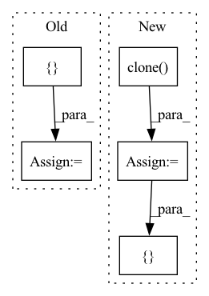

Pattern ID :19952

Before Change
jacobian_g[:, :, :3] = group[:, :, :3]
jacobian_g[:, :, 3:] = -group[:, :, :3] @ SO3._hat_autograd_fn(tensor)
jacobian_p = group[:, :, :3].view(tensor.shape[:-1] + (3, 3))
jacobians = []
jacobians.append(jacobian_g)
jacobians.append(jacobian_p)
return jacobians, _transform_from_impl(group, tensor)
After Change
jacobian_g[..., :3] = group[..., :3]
jacobian_g[..., 3:] = -group[..., :3] @ SO3._hat_autograd_fn(tensor)
jacobian_p = group[..., :3]
jacobian_g = jacobian_g.expand(*size, 3, 6).clone()
jacobian_p = jacobian_p.expand(*size, 3, 3).clone()
return [jacobian_g, jacobian_p], ret
class TransformFrom(lie_group.BinaryOperator):
In pattern: SUPERPATTERN
Frequency: 3
Non-data size: 5
Instances
Fragment ID: 64909054
Project Name: facebookresearch/theseus
Commit Name: f8f533dbde1f2fc8e8591949bb127c0488467a20
Time: 2023-05-10
Author: 6612911+fantaosha@users.noreply.github.com
File Name: theseus/labs/lie/functional/se3_impl.py
M Class Name: AnonimousClass
N Class Name: AnonimousClass
M Method Name: _jtransform_from_impl(2)
N Method Name: _jtransform_from_impl(2)
M Parent Class:
N Parent Class:
M File Name: theseus/labs/lie/functional/se3_impl.py
N File Name: theseus/labs/lie/functional/se3_impl.py
M Start Line: 755
M End Line: 762
N Start Line: 754
N End Line: 762
'>
Before Change
check_transform_tensor(tensor)
jacobian_g = -group @ _hat_autograd_fn(tensor)
jacobian_p = group.view(tensor.shape[:-1] + (3, 3))
jacobians = []
jacobians.append(jacobian_g)
jacobians.append(jacobian_p)
return jacobians, _transform_from_impl(group, tensor)
After Change
size = get_transform_tensor_size(ret)
jacobian_g = -group @ _hat_autograd_fn(tensor)
jacobian_p = group
jacobian_g = jacobian_g.expand(*size, 3, 3).clone()
jacobian_p = jacobian_p.expand(*size, 3, 3).clone()
return [jacobian_g, jacobian_p], ret
class TransformFrom(lie_group.BinaryOperator):
'>
Fragment ID: 64909052
Project Name: facebookresearch/theseus
Commit Name: f8f533dbde1f2fc8e8591949bb127c0488467a20
Time: 2023-05-10
Author: 6612911+fantaosha@users.noreply.github.com
File Name: theseus/labs/lie/functional/so3_impl.py
M Class Name: AnonimousClass
N Class Name: AnonimousClass
M Method Name: _jtransform_from_impl(2)
N Method Name: _jtransform_from_impl(2)
M Parent Class:
N Parent Class:
M File Name: theseus/labs/lie/functional/so3_impl.py
N File Name: theseus/labs/lie/functional/so3_impl.py
M Start Line: 666
M End Line: 671
N Start Line: 668
N End Line: 674
'>
Before Change
y = batch["y"] // (batch_size, output_length, num_nodes, feature_dim)
input_length = x.shape[1]
output_length = y.shape[1]
tmp = torch.cat([x, y], dim=1) // (batch_size, input_length + output_length, num_nodes, feature_dim)
y_preds = []
for pred_idx in range(output_length):
end_idx = pred_idx + input_length
x_ = tmp[:, pred_idx: end_idx, :, :]
batch_tmp = {"X": x_}
y_ = self.forward(batch_tmp) // (batch_size, 1(output_length), num_nodes, 1(feature_dim))
y_preds.append(y_)
After Change
y = batch["y"] // (batch_size, output_length, num_nodes, feature_dim)
output_length = y.shape[1]
y_preds = []
x_ = x.clone() // copy!!
for i in range(output_length):
batch_tmp = {"X": x_}
y_ = self.forward(batch_tmp) // (batch_size, 1(output_length), num_nodes, 1(feature_dim))
y_preds.append(y_.clone())
if y_.shape[3] < x_.shape[3]: // y_的feature_dim可能小于x_的
y_ = torch.cat([y_, y[:, i:i+1, :, self.output_dim:]], dim=3)
x_ = torch.cat([x_[:, 1:, :, :], y_], dim=1)
y_preds = torch.cat(y_preds, dim=1) // concat at time_length, y_preds.shape=y.shape
return y_preds
'>
Fragment ID: 64909058
Project Name: libcity/bigscity-libcity
Commit Name: 5cbebea9ebc8555f8acd2d1746c783077371e869
Time: 2021-01-30
Author: 35984903+aptx1231@users.noreply.github.com
File Name: trafficdl/model/traffic_speed_prediction/STGCN.py
M Class Name: STGCN
N Class Name: STGCN
M Method Name: predict(2)
N Method Name: predict(2)
M Parent Class: AbstractModel
N Parent Class: AbstractModel
M File Name: trafficdl/model/traffic_speed_prediction/STGCN.py
N File Name: trafficdl/model/traffic_speed_prediction/STGCN.py
M Start Line: 179
M End Line: 190
N Start Line: 179
N End Line: 190